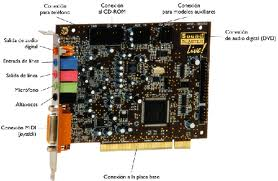

A. Tarjeta de Sonido
Una tarjeta
de sonido típica tiene los siguientes componentes:
· Un procesador de señal digital (DSP) que realiza los cálculos de procesamiento de sonido.
· Un conversor analógico digital (ADC) para poder grabar el sonido de una fuente externa a formato digital.
· Un conversor digital analógico (DAC) para reproducir el sonido.
· Memoria para almacenamiento de muestras de sonido y otros datos.
· Sintetizador MIDI para la generación de sonidos.
· Conector interno para el lector de CD-ROM, que permite reproducir CD de audio
· Conectores externos: suelen ser de tipo mini-jack (salvo en las tarjetas de mayor calidad que usan conectores RCA). Los conectores más habituales son:
A. Entrada para micrófono
B. Entrada line-in: para introducir y digitalizar una señal de audio analógica. Los sonidos deben estar preamplificados, por ejemplo, un lector de cassettes, un lector de vídeo, un equipo de sonido, un televisor, un mezclador, etc.
C. Salida line-out: para llevar una señal de audio analógica a un amplificador.
D. Salida de altavoz
E.
Conector
MIDI: sirve para recibir mensajes MIDI que van al sintetizador de la
tarjeta, o para enviar mensajes MIDI a un módulo sintetizador externo. También
se suele usar como conector de joystick.
Este artículo está licenciado bajo Creative Commons Attribution-NonCommercial-ShareAlike 2.5 License
Jo.R.C.A. 2004 - 2011

Edición de Audio y Video con Software Libre by José Ramón Cerdeira Alonso is licensed under a Creative Commons Reconocimiento-No comercial-Compartir bajo la misma licencia 3.0 España License